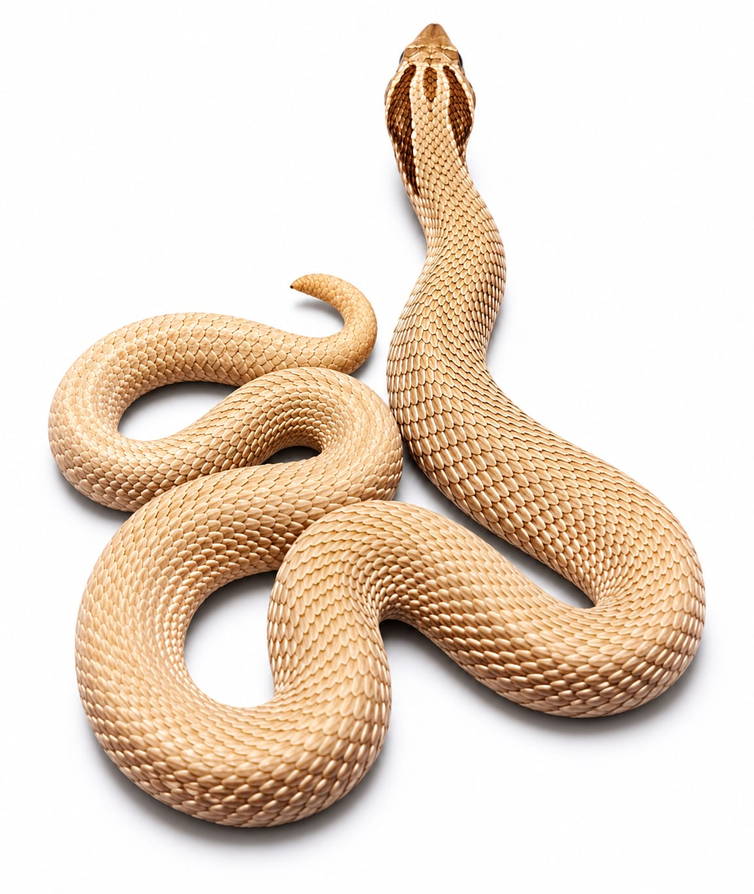

alt="Odin" class="hero-image">Especie: Western Hognose
Sexo: Macho
Morph: Super Conda, Arctic, Het Toffee, Het Albino
Año: 2025
Peso: 28 g
Origen: CODE
Estado: Juvenil
Ejemplar genéticamente extraordinario. Combina dos mutaciones visuales y dos genes recesivos en estado heterocigoto.
Forma parte del Archivo Genético CODE como registro documental permanente.